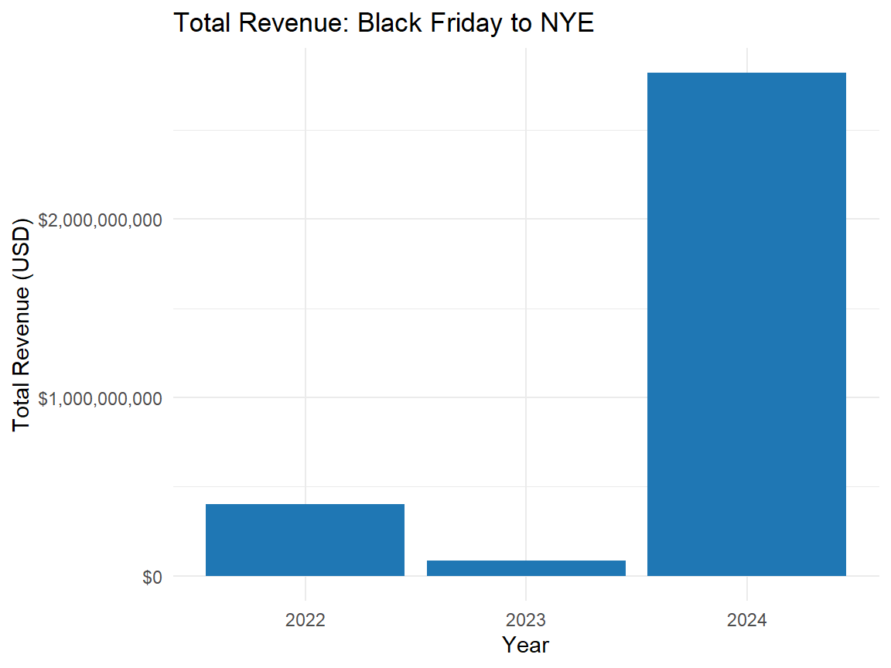
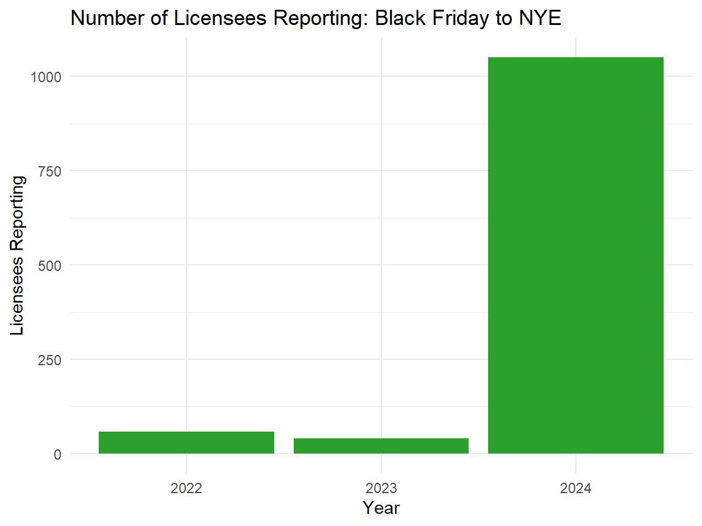
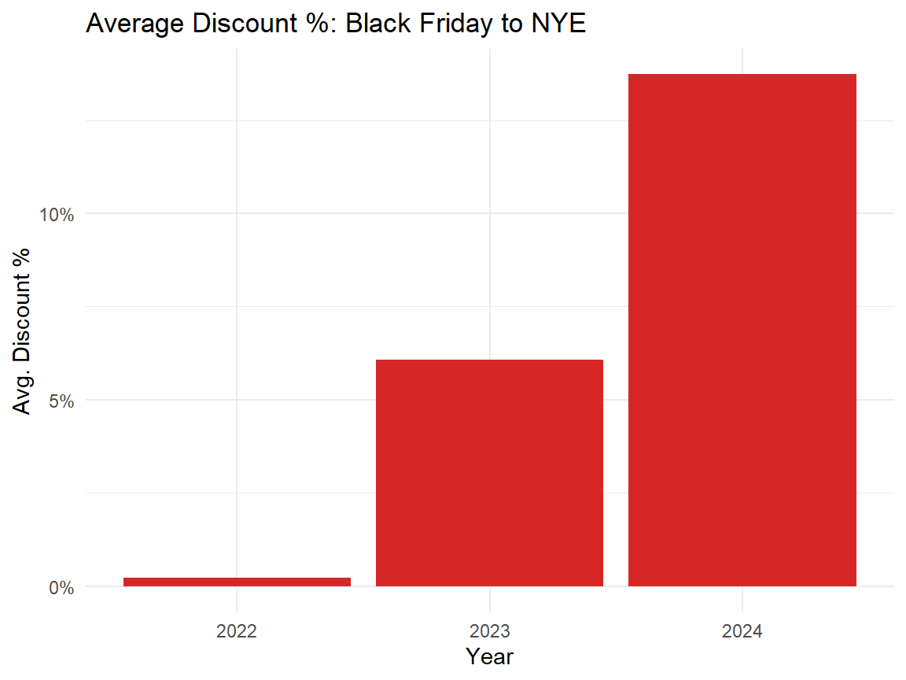

Three Years of Washington’s Cannabis Holiday Economy Comparison (2022 – 2024)
Washington’s Cannabis Holiday Economy Hits $1.8 Billion — Three Years of Growth, Discounts, and Data Maturity
CCRS
Cannabis
Sales
Holiday
3Years
The Bottom Line Up Front
In just three years, Washington’s cannabis holiday economy evolved from a small, high-margin niche into a billion-dollar retail machine. The numbers speak for themselves:
More participation,
More transparency, and
More competition.
If 2022 was the baseline and 2023 the trial run, then 2024 was the breakthrough year — a turning point when Washington’s cannabis market finally began behaving like the mature retail ecosystem it’s long promised to become.
Trends at a Glance
| Metric | 2022 → 2023 Change | 2023 → 2024 Change |
|---|---|---|
| Licensees Reporting | ▼ 30 % | ▲ 2,590 % |
| Total Revenue | ▼ 62 % | ▲ 2,885 % |
| Avg. Discount % | ▲ 5.4 pts | ▲ 13.2 pts |
The data reveal a classic emerging-market curve: contraction, adaptation, and explosive scale once systems and participation align.
Total Revenue by Year
Bar Chart: Licensees Reporting

Overview
Every winter, Washington’s cannabis market tells a story through its data — a reflection of how retailers, producers, and consumers adapt to shifting regulations, supply dynamics, and price pressures.
Using statewide CCRS data from 2022 to 2024, we compared three key metrics for the holiday period (Black Friday → New Year’s Day):
Summary Table
| Year | Licensees Reporting | Total Revenue | Avg. Discount % |
|---|---|---|---|
| 2022 | 56 | $158 million | 0.46 % |
| 2023 | 39 | $59.7 million | 5.88 % |
| 2024 | 1,050 | $1.78 billion | 19.1 % |
2022 — A Cautious Baseline
In 2022, Washington’s cannabis retailers approached the holidays conservatively. Only 56 licensees reported data, generating roughly $158 million in revenue with virtually no discounting activity (0.46 %).
This period marked the post-pandemic normalization of retail operations: inventory was tight, margins were protected, and data participation was still fragmented. The industry’s watchword that winter was stability — not growth.
2023 — A Contraction Year with Competitive Pressure
By 2023, total reported revenue fell sharply to $59.7 million, as only 39 active licensees submitted CCRS data during the holiday window.
Yet this smaller dataset revealed an important behavioral shift: average discounting jumped to 5.9 %, signaling that retailers began using price incentives to move volume amid rising competition and consumer price sensitivity.
2023 thus stands as a compression year — one where operators tested markdown strategies and tightened cost controls ahead of the coming data-reporting expansion.
2024 — Scale Arrives
Then came 2024, and with it, the inflection point.
More than 1,000 licensees — a twenty-fold increase in participation — reported into CCRS. The result: a record $1.78 billion in holiday sales, accompanied by a statewide average discount rate of 19 %.
This surge reflects not only improved data integration and compliance but also a maturing market where retailers leveraged deep promotions to compete for share.
Interpretation:
2024 was the first year Washington’s cannabis industry achieved both complete visibility and mass consumer reach, transforming the holiday period into a true retail event comparable to mainstream sectors.
Bar Chart: Average Discount %

Market Interpretation
1. Visibility and Compliance Drive Growth The 2024 leap in licensee reporting underscores how CCRS adoption and POS automation have matured. What was once a partial sample is now a comprehensive dataset.
2. Discounts as a Competitive Tool
The escalation from <1 % to >19 % average discounts indicates the industry’s pivot toward retail economics — holiday promotions, bundling, and loyalty-based pricing.
3. Economic Signal, Not Just Cultural
4/20 and year-end periods now behave like standard consumer holidays, with predictable revenue spikes and price competition shaping fiscal calendars.
Join the discussion
You can sign in with Google, GitHub, or email to comment.